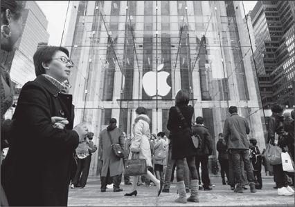

New York’s Fifth Avenue store
Jobs hated to cede control of anything, especially when it might affect the customer experience. But he faced a problem. There was one part of the process he didn’t control: the experience of buying an Apple product in a store.
乔布斯不喜欢失去对任何事情的控制，尤其是关系到顾客体验的事情。但是他面临着一个问题，在这个过程中有一个部分他还没有控制到——那就是在商店里购买苹果产品的体验。
The days of the Byte Shop were over. Industry sales were shifting from local computer specialty shops to megachains and big box stores, where most clerks had neither the knowledge nor the incentive to explain the distinctive nature of Apple products. “All that the salesman cared about was a $50 spiff,” Jobs said. Other computers were pretty generic, but Apple’s had innovative features and a higher price tag. He didn’t want an iMac to sit on a shelf between a Dell and a Compaq while an uninformed clerk recited the specs of each. “Unless we could find ways to get our message to customers at the store, we were screwed.”
ByteShop的时代已经结束了。计算机行业的销售已经从本地的计算机专卖店过渡到了大型连锁商店和量贩店，但是在这些地方，大部分店员既不具备苹果产品的基本知识，也没有意愿去为顾客解释产品的独特性能。乔布斯说：“所有的销售员都只关心那50美元的销售提成。”其他的计算机都很普通，但是苹果计算机有一些创新的功能，价格也更高。他不希望iMac被放在戴尔和康柏的旁边，然后不懂行的店员向顾客背诵出每台计算机的配置。“除非有办法在商店里就把我们的理念传达给顾客，否则我们就完蛋了。”
In great secrecy, Jobs began in late 1999 to interview executives who might be able to develop a string of Apple retail stores. One of the candidates had a passion for design and the boyish enthusiasm of a natural-born retailer: Ron Johnson, the vice president for merchandising at Target, who was responsible for launching distinctive-looking products, such as a teakettle designed by Michael Graves. “Steve is very easy to talk to,” said Johnson in recalling their first meeting. “All of a sudden there’s a torn pair of jeans and turtleneck, and he’s off and running about why he needed great stores. If Apple is going to succeed, he told me, we’re going to win on innovation. And you can’t win on innovation unless you have a way to communicate to customers.”
1999年中后期，乔布斯开始秘密地面试一些能开发苹果零售店的管理人员。其中一个候选人热爱设计，他就像是天生的零售商一般拥有孩童般的热情——罗恩·约翰逊（RonMmson）当时是塔吉特公司（Target）负责销售规划的副总裁，主要工作是发布有特色的新产品，比如迈克尔·格雷夫斯（MichaelGraves）设计的茶壶。约翰逊回忆起他们的第一次会面时说：“史蒂夫非常平易近人。他穿着髙领衫和破旧的牛仔裤，开门见山地谈起他为什么想要开零售店。他告诉我，如果苹果想要成功，那一定是通过创新取胜。但如果你无法把创新之处传达给顾客，你就无法通过创新取胜。”
When Johnson came back in January 2000 to be interviewed again, Jobs suggested that they take a walk. They went to the sprawling 140-store Stanford Shopping Mall at 8:30 a.m. The stores weren’t open yet, so they walked up and down the entire mall repeatedly and discussed how it was organized, what role the big department stores played relative to the other stores, and why certain specialty shops were successful.
2000年1月，约翰逊来参加第二轮面试。乔布斯建议他们一起出去走走。早上8点半，他们去了斯坦福购物中心，这是一栋向四处伸展的不规则建筑，里面有140家商铺。当时这些商铺都还没开门，于是他们一边在里面上上下下地走来走去，一边讨论着购物中心的布局、大型购物中心相对于其他商店来说扮演了什么角色，以及某些专卖店成功的原因。
They were still walking and talking when the stores opened at 10, and they went into Eddie Bauer. It had an entrance off the mall and another off the parking lot. Jobs decided that Apple stores should have only one entrance, which would make it easier to control the experience. And the Eddie Bauer store, they agreed, was too long and narrow. It was important that customers intuitively grasp the layout of a store as soon as they entered.
他们一直谈论到上午10点，商铺纷纷开门了，他们先去了艾迪堡（EddieBauer）。这家商铺有两个入口，一个直接面对购物中心内部，另一个连着停车场。乔布斯说苹果零售店只能有一个入口，这样能够更好地控制顾客体验。他们一致认为艾迪堡的商铺过于狭长，而最好的情况是让顾客一进来就能了解店铺的整体布局。
There were no tech stores in the mall, and Johnson explained why: The conventional wisdom was that a consumer, when making a major and infrequent purchase such as a computer, would be willing to drive to a less convenient location, where the rent would be cheaper. Jobs disagreed. Apple stores should be in malls and on Main Streets—in areas with a lot of foot traffic, no matter how expensive. “We may not be able to get them to drive ten miles to check out our products, but we can get them to walk ten feet,” he said. The Windows users, in particular, had to be ambushed: “If they’re passing by, they will drop in out of curiosity, if we make it inviting enough, and once we get a chance to show them what we have, we will win.”
在这家购物中心里没有科技类的店铺，约翰逊将原因解释为：“传统观念认为，交通不太便利的地方一般租金都比较便宜。当消费者要买计算机这种大件的，又不经常购买的商品时，还是愿意开车去那里，因为那边的租金会便宜些。”乔布斯不同意这个说法。他认为苹果零售店应该开在繁华街区的购物中心里——那种区域行人多——无论租金有多贵。他说：“我们不能让顾客开10英里的车去看我们的产品，而是要在10步之内。”尤其是Windows用户，一定要给他们设好“埋伏”。“如果路过这里，他们会出于好奇心走进来。如果我们把店面做得足够吸引人，一且我们有机会向他们展示我们的产品，我们就赢了。”
Johnson said that the size of a store signaled the importance of the brand. “Is Apple as big of a brand as the Gap?” he asked. Jobs said it was much bigger. Johnson replied that its stores should therefore be bigger. “Otherwise you won’t be relevant.” Jobs described Mike Markkula’s maxim that a good company must “impute”—it must convey its values and importance in everything it does, from packaging to marketing. Johnson loved it. It definitely applied to a company’s stores. “The store will become the most powerful physical expression of the brand,” he predicted. He said that when he was young he had gone to the wood-paneled, art-filled mansion-like store that Ralph Lauren had created at Seventy-second and Madison in Manhattan. “Whenever I buy a polo shirt, I think of that mansion, which was a physical expression of Ralph’s ideals,” Johnson said. “Mickey Drexler did that with the Gap. You couldn’t think of a Gap product without thinking of the great Gap store with the clean space and wood floors and white walls and folded merchandise.”
约翰逊认为商铺的面积能够体现品牌的重要性。他问道：“苹果有GAP那么大牌吗？”乔布斯比GAP大多了。约翰逊于是说，那苹果零售店也应该比GAP的大。“否则你就是个无关紧要的牌子。”乔布斯向他描述了迈克·马库拉的名言：一家好的公司要学会“灌输”——它必须竭尽所能传递它的价值和重要性，从包装到营销。约翰逊很喜欢这个概念。这绝对可以应用到零售店中。他说：“零售店将成为品牌最强有力的实体表达。”约翰逊描述了自己年轻时第一次踏进拉尔夫·劳伦开在曼哈顿麦迪逊大道与72街交叉口处的店铺时所看到的——四下镶嵌着木板、如大厦般宏伟的店面散发着艺术气息。“每当我买了一件polo衫，我都会想起那栋大厦，那是对拉尔夫理念的实体表达。”他还说：“米基·德雷克斯勒（MickeyDimler）对GAP也采取了同样的策略。当你想到GAP品牌时，马上就会联想到它巨大的商铺——洁净的空间、木质地板、白色墙面和整齐叠放的衣物。”
When they finished, they drove to Apple and sat in a conference room playing with the company’s products. There weren’t many, not enough to fill the shelves of a conventional store, but that was an advantage. The type of store they would build, they decided, would benefit from having few products. It would be minimalist and airy and offer a lot of places for people to try out things. “Most people don’t know Apple products,” Johnson said. “They think of Apple as a cult. You want to move from a cult to something cool, and having an awesome store where people can try things will help that.” The stores would impute the ethos of Apple products: playful, easy, creative, and on the bright side of the line between hip and intimidating.
结束了考察之后，他们开车回到公司，坐在会议室里把玩着公司的产品。产品的数量不多，不足以装满一个传统意义上的商店，但这反而是一个优势。他们决定要建立一个以“少”为特色的商店，简约、通透，给人们提供很多试用产品的位置。约翰逊说：“大多数人并不了解苹果产品。他们认为苹果是一个异类。如果你想要转变形象，从异类变成炫酷有趣，那么建立一个能给人们提供试用空间的商店会很有帮助。”商店风格也将沿袭苹果产品的特点：有趣、简单、时髦、有创意，在时尚与令人生畏之间拿捏得刚刚好。
When Jobs finally presented the idea, the board was not thrilled. Gateway Computers was going down in flames after opening suburban stores, and Jobs’s argument that his would do better because they would be in more expensive locations was not, on its face, reassuring. “Think different” and “Here’s to the crazy ones” made for good advertising slogans, but the board was hesitant to make them guidelines for corporate strategy. “I’m scratching my head and thinking this is crazy,” recalled Art Levinson, the CEO of Genentech who joined the Apple board in 2000. “We are a small company, a marginal player. I said that I’m not sure I can support something like this.” Ed Woolard was also dubious. “Gateway has tried this and failed, while Dell is selling direct to consumers without stores and succeeding,” he argued. Jobs was not appreciative of too much pushback from the board. The last time that happened, he had replaced most of the members. This time, for personal reasons as well as being tired of playing tug-of-war with Jobs, Woolard decided to step down. But before he did, the board approved a trial run of four Apple stores.
当乔布斯说出他开苹果零售店的设想时，董事会成员并未露出喜悦之情。他们促出，捷威计算机（Gateway）在开了郊区的零售店之后就走向了衰落。但是乔布斯认为他能够做得更好，因为苹果零售店将开在地段更昂贵的购物中心里，不过他的分析看来并没让董事会放心。“非同凡想”和“致疯狂的人”可以拿来做不错的广告词，但是董事会却在犹豫是否该把它们当成公司的战略方针。亚瑟·莱文森在2000年被乔布斯邀请加入董事会，此前他是基因泰克公司（Genentech）的CEO。他回忆说：“我当时挠着头想，这点子可真够疯狂的。”“我们是一家小公司，还比较边缘化。我说，我不敢确定自己会支持这种做法。”埃德·伍拉德当时也对此表示怀疑，“捷威就作过这样的尝试，最后失败了，而戴尔并没开零售店，通过直销也取得了成功。”乔布斯没有把董事会的阻挠放在心上。最后一次讨论时，乔布斯已经换掉了董事会中的大部分成员。这一次，既是出于个人原因，也是因为不想再和乔布斯玩这种“拔河比赛”，伍拉德决定辞职。不过在他辞职之前，董事会已经批准了开设4家苹果零售店，进行试运营。
Jobs did have one supporter on the board. In 1999 he had recruited the Bronx-born retailing prince Millard “Mickey” Drexler, who as CEO of Gap had transformed a sleepy chain into an icon of American casual culture. He was one of the few people in the world who were as successful and savvy as Jobs on matters of design, image, and consumer yearnings. In addition, he had insisted on end-to-end control: Gap stores sold only Gap products, and Gap products were sold almost exclusively in Gap stores. “I left the department store business because I couldn’t stand not controlling my own product, from how it’s manufactured to how it’s sold,” Drexler said. “Steve is just that way, which is why I think he recruited me.”
在董事会里面，倒是有一个人一直都支持乔布斯。他就是GAP的前CEO米勒德·米基·德雷克斯勒。这个在纽约布朗克斯区出生的零售界大亨，在1999年被乔布斯拉进了苹果的董事会。他曾经把死气沉沉的GAP连锁店变成了美国休闲文化的标志。他也是这个世界上极少数的在设计、形象和消费者需求方面与乔布斯同样成功和精明的人。另外，他还强调端到端的控制模式：GAP商店只出售GAP品牌的产品，而且GAP产品几乎只能够在GAP商店里独家销售。德雷克斯勒说：“我不再把产品放进百货商店，因为我必须要控制我自己的产品，从生产制作到最终销售。史蒂夫也是这样的人，我想这也是他把我招进来的原因。”
Drexler gave Jobs a piece of advice: Secretly build a prototype of the store near the Apple campus, furnish it completely, and then hang out there until you feel comfortable with it. So Johnson and Jobs rented a vacant warehouse in Cupertino. Every Tuesday for six months, they convened an all-morning brainstorming session there, refining their retailing philosophy as they walked the space. It was the store equivalent of Ive’s design studio, a haven where Jobs, with his visual approach, could come up with innovations by touching and seeing the options as they evolved. “I loved to wander over there on my own, just checking it out,” Jobs recalled.
德雷克斯勒给了乔布斯一个建议：在苹果园区附近秘密建立一个模拟商店，按照正式的店面进行装潢布置，然后就在那里讨论，直到有完整的想法。于是，约翰逊和乔布斯就在库比蒂诺租下了一间空置的库房。接下来的6个月里，每周二整个上午他们都在那里进行头脑风暴会议，一边在里面来回走动，一边完善他们的零售理念。这个商店的性质和艾弗的设计工作室很相似，都是乔布斯的避风港，乔布斯用他那可视化的方式通过触摸和观察里面的变化，不断地想出新点子。乔布斯回忆说：“我很喜欢自己一个人到这儿来走走，只是随便看看。”
Sometimes he made Drexler, Larry Ellison, and other trusted friends come look. “On too many weekends, when he wasn’t making me watch new scenes from Toy Story, he made me go to the warehouse and look at the mockups for the store,” Ellison said. “He was obsessed by every detail of the aesthetic and the service experience. It got to the point where I said, ‘Steve I’m not coming to see you if you’re going to make me go to the store again.’”
有时，他也会让德雷克斯勒、拉里·埃利森以及其他可以信赖的伙伴过来看看。埃利森说：“有很多个周末，只要他没有让我看《玩具总动员》里的新场景，他就会让我去库房看模拟商店。他对美学和服务体验的每一个细节都力求完美。搞得我不得不和他说：‘史蒂夫，如果你还要我去看那个商店，我就不去找你了。’”
Ellison’s company, Oracle, was developing software for the handheld checkout system, which avoided having a cash register counter. On each visit Jobs prodded Ellison to figure out ways to streamline the process by eliminating some unnecessary step, such as handing over the credit card or printing a receipt. “If you look at the stores and the products, you will see Steve’s obsession with beauty as simplicity—this Bauhaus aesthetic and wonderful minimalism, which goes all the way to the checkout process in the stores,” said Ellison. “It means the absolute minimum number of steps. Steve gave us the exact, explicit recipe for how he wanted the checkout to work.”
埃利森的甲骨文公司当时正在为店里的手持结账系统开发软件，这样就不必再设一个现金收银台。每一次拜访，乔布斯都会剌激埃利森找到简化付款流程的办法，减少一些不必要的步骤，比如出示信用卡和打印凭条。埃利森说：“如果你见过苹果零售店和苹果产品，你就会了解到史蒂夫对美学和筒约主义的热爱——这种包豪斯设计体系和简约主义，从进入商店一直贯穿到付款流程。这意味着对步骤的绝对简化。史蒂夫明确地告诉了我们他对付款流程的要求。”
When Drexler came to see the prototype, he had some criticisms: “I thought the space was too chopped up and not clean enough. There were too many distracting architectural features and colors.” He emphasized that a customer should be able to walk into a retail space and, with one sweep of the eye, understand the flow. Jobs agreed that simplicity and lack of distractions were keys to a great store, as they were to a product. “After that, he nailed it,” said Drexler. “The vision he had was complete control of the entire experience of his product, from how it was designed and made to how it was sold.”
德雷克斯勒看到接近完工的模拟商店之后，提出了一些批评。“空间太琐碎了，还不够干净。还有太多让人分心的建筑结构和色彩。”他强调要让顾客一进入这个零售区域，只需看一眼，就了解这里的流程。乔布斯同意他的观点：简约、减少分心的因素，是一家商店成功的关键，对于产品来说也是一样。德雷克斯勒说：“在那之后，他作了一些修正并且成功了。他的愿景是能够完全控制产品的全过程，从设计到销售。”
In October 2000, near what he thought was the end of the process, Johnson woke up in the middle of a night before one of the Tuesday meetings with a painful thought: They had gotten something fundamentally wrong. They were organizing the store around each of Apple’s main product lines, with areas for the PowerMac, iMac, iBook, and PowerBook. But Jobs had begun developing a new concept: the computer as a hub for all your digital activity. In other words, your computer might handle video and pictures from your cameras, and perhaps someday your music player and songs, or your books and magazines. Johnson’s predawn brainstorm was that the stores should organize displays not just around the company’s four lines of computers, but also around things people might want to do. “For example, I thought there should be a movie bay where we’d have various Macs and PowerBooks running iMovie and showing how you can import from your video camera and edit.”
2000年10月，就在约翰逊觉得即将大功告成的时候，他在周二例会前的半夜醒来，头脑中冒出一个可怕的想法：他们犯了一些基础性的错误。他们围绕着苹果的主要产品线把商店分成若干个区域：有PowerMac、iMac,iBook和PowerBook。但是乔布斯开始发展出一个新的概念：使计算机成为你所有数字生活的中枢。换句话说，你的计算机能够处理相机里的视频和照片，或许有一天也能用做音乐播放器来听歌，或者阅读书和杂志。黎明时分，约翰逊计上心头：商店内部不能只按照公司的四款计算机产品线进行划分，还应该考虑到顾客想做什么。他说：“比如，我想可以有一个‘电影区’，在那里我们可以用几台Mac电脑和PowerBook,运行iMovie软件，向顾客展示怎么从摄像机中导入文件并编辑。”
Johnson arrived at Jobs’s office early that Tuesday and told him about his sudden insight that they needed to reconfigure the stores. He had heard tales of his boss’s intemperate tongue, but he had not yet felt its lash—until now. Jobs erupted. “Do you know what a big change this is?” he yelled. “I’ve worked my ass off on this store for six months, and now you want to change everything!” Jobs suddenly got quiet. “I’m tired. I don’t know if I can design another store from scratch.”
周一一大早，约翰逊就来到乔布斯的办公室，告诉丁他那临时冒出的关于重新组织商店格局的新想法。他早就听说过他的老板经常会口不择言，极力挖苦，这次他才算是真正领教了。乔布斯爆发了：“你知道这个变化有多大吗？”他囔道，“我他妈为这个商店玩命干了6个月，你今天才告诉我全部都要改。”然后他突然安静下来：“我累了，我不知道还能不能从零幵始设计一间商店。”
Johnson was speechless, and Jobs made sure he remained so. On the ride to the prototype store, where people had gathered for the Tuesday meeting, he told Johnson not to say a word, either to him or to the other members of the team. So the seven-minute drive proceeded in silence. When they arrived, Jobs had finished processing the information. “I knew Ron was right,” he recalled. So to Johnson’s surprise, Jobs opened the meeting by saying, “Ron thinks we’ve got it all wrong. He thinks it should be organized not around products but instead around what people do.” There was a pause, then Jobs continued. “And you know, he’s right.” He said they would redo the layout, even though it would likely delay the planned January rollout by three or four months. “We’ve only got one chance to get it right.”
约翰逊无语了，乔布斯也没有再让他幵口。在开车去模拟商店（大家已经汇合在那里等着开周二会议）的路上，乔布斯告诉约翰逊，一会儿不要跟他或团队的任何成员说话。于是这7分钟的车程里，两人一直保持沉默。当他们抵达时，乔布斯已经把刚才的信息过了一遍。“我知道罗恩是对的。”他回忆道。乔布斯作了这样一个令约翰逊惊讶的开场白：“罗恩认为我们错了。他觉得我们不应该按照产品来划分区域，而是应该考虑到顾客的活动。”他停顿了一下，继续说，“你们知道，他是对的。”他说他们将重新设计布局，即使这样会把首次展示的时间从原定的1月份再拖延三四个月。“我们只能一次成功。”
Jobs liked to tell the story—and he did so to his team that day—about how everything that he had done correctly had required a moment when he hit the rewind button. In each case he had to rework something that he discovered was not perfect. He talked about doing it on Toy Story, when the character of Woody had evolved into being a jerk, and on a couple of occasions with the original Macintosh. “If something isn’t right, you can’t just ignore it and say you’ll fix it later,” he said. “That’s what other companies do.”
乔布斯喜欢向人们讲述，他所做的每件漂亮事都曾有过返工的时候。当他觉得不够完美时，就会重来。那天，他对团队也讲了这些故事。他讲到了在制作《玩具总动员》的时候，胡迪这个角色原本是一个令人讨厌的家伙；还有麦金塔的制造过程中也出现过一些问题。他说：“如果你发现有些事做得不对，你不能只是忽略它，然后说‘以后再处理’，这是其他公司的做法。”
When the revised prototype was finally completed in January 2001, Jobs allowed the board to see it for the first time. He explained the theories behind the design by sketching on a whiteboard; then he loaded board members into a van for the two-mile trip. When they saw what Jobs and Johnson had built, they unanimously approved going ahead. It would, the board agreed, take the relationship between retailing and brand image to a new level. It would also ensure that consumers did not see Apple computers as merely a commodity product like Dell or Compaq.
苹果样板店终于在2001年1月完成了改装工作，乔布斯首次请董事会前往参观。他先是在白板上向大家讲述了他的设计理念，然后带大家乘面包车前往两英里外的样板店。在了解了乔布斯和约翰逊建好的商店之后，大家一致批准让项目继续进行。董事会认为，看到苹果零售店将把零售和品牌之间的关系提升到一个新的高度，同时也能确保消费者不会把苹果电脑看成戴尔或康柏那样的大众化商品。
Most outside experts disagreed. “Maybe it’s time Steve Jobs stopped thinking quite so differently,” Business Week wrote in a story headlined “Sorry Steve, Here’s Why Apple Stores Won’t Work.” Apple’s former chief financial officer, Joseph Graziano, was quoted as saying, “Apple’s problem is it still believes the way to grow is serving caviar in a world that seems pretty content with cheese and crackers.” And the retail consultant David Goldstein declared, “I give them two years before they’re turning out the lights on a very painful and expensive mistake.”
但大多数外界专家都不看好苹果零售店。《商业周刊》发表了一篇题为“抱歉，史蒂夫，这就是苹果零售店无法成功的原因”的文章，其中写道“也许这次乔布斯不再‘非同凡想’了”。苹果的前首席财务官约瑟夫·格拉齐亚诺的话也被引用到文章中：“苹果公司的问题就在于，他们仍然认为成长的秘诀是——当这个世界已经格外满定于奶酪和脆饼时，他们应该去卖鱼子酱。”零售顾问戴维·格斯丁（DavidGoldstein）也断言道：“不出两年他们就会闭门歇业，并为这个错误付出痛苦而沉重的代价。”
On May 19, 2001, the first Apple store opened in Tyson’s Corner, Virginia, with gleaming white counters, bleached wood floors, and a huge “Think Different” poster of John and Yoko in bed. The skeptics were wrong. Gateway stores had been averaging 250 visitors a week. By 2004 Apple stores were averaging 5,400 per week. That year the stores had $1.2 billion in revenue, setting a record in the retail industry for reaching the billion-dollar milestone. Sales in each store were tabulated every four minutes by Ellison’s software, giving instant information on how to integrate manufacturing, supply, and sales channels.
2001年5月19日，第一家苹果零售店在弗吉尼亚州的髙端购物中心泰森角（Tyson-sComer）开业了。亮白色的柜台、浅色的木地板，店内还悬挂着一张印有“非同凡想”的巨幅海报，上面是约翰·列侬和小野洋子躺在床上。那些怀疑论者估计错了。当初，捷威计算机商店每周的客流量只有250人左右。截至2004年，苹果零售店每周的客流量已经达到了5400人。在这一年，苹果零售店的收入达到12亿美元，并因为突破10亿美元量级而创下了零售业的新纪录。每家零售店的销量每隔4分钟就会由埃利森的软件汇总成电子表格，快速地生成关干如何整合制造、供应和销售渠道的信息。
As the stores flourished, Jobs stayed involved in every aspect. Lee Clow recalled, “In one of our marketing meetings just as the stores were opening, Steve made us spend a half hour deciding what hue of gray the restroom signs should be.” The architectural firm of Bohlin Cywinski Jackson designed the signature stores, but Jobs made all of the major decisions.
随着零售店越来越受欢迎，乔布斯便开始涉入方方面面。李·克劳回忆道：“零售店刚开业时，在一次营销会议上，乔布斯让我们花半个小时的时间决定店内厕所的标志该使用哪一种灰色。”波林-赛温斯基-杰克逊建筑事务所（BohlinCywinskiJackson）为店面提供设计方案，但是主要方面还是由乔布斯作决定。
Jobs particularly focused on the staircases, which echoed the one he had built at NeXT. When he visited a store as it was being constructed, he invariably suggested changes to the staircase. His name is listed as the lead inventor on two patent applications on the staircases, one for the see-through look that features all-glass treads and glass supports melded together with titanium, the other for the engineering system that uses a monolithic unit of glass containing multiple glass sheets laminated together for supporting loads.
乔布斯尤其关注楼梯的设计，苹果零售店的楼梯和他以前为NeXT办公楼设计的楼梯如出一辙。他每去一个正在兴建的店铺时，都会对楼梯的设计提出改进建议。为他设计的楼梯递交的两项专利申请书上都把他作为主要发明者：一个专利是采用了透明玻璃踏板和玻璃混合金属钛的支架；一个专利是采用含有多层玻璃压制而成的整块承重玻璃系统。
In 1985, as he was being ousted from his first tour at Apple, he had visited Italy and been impressed by the gray stone of Florence’s sidewalks. In 2002, when he came to the conclusion that the light wood floors in the stores were beginning to look somewhat pedestrian—a concern that it’s hard to imagine bedeviling someone like Microsoft CEO Steve Ballmer—Jobs wanted to use that stone instead. Some of his colleagues pushed to replicate the color and texture using concrete, which would have been ten times cheaper, but Jobs insisted that it had to be authentic. The gray-blue Pietra Serena sandstone, which has a fine-grained texture, comes from a family-owned quarry, Il Casone, in Firenzuola outside of Florence. “We select only 3% of what comes out of the mountain, because it has to have the right shading and veining and purity,” said Johnson. “Steve felt very strongly that we had to get the color right and it had to be a material with high integrity.” So designers in Florence picked out just the right quarried stone, oversaw cutting it into the proper tiles, and made sure each tile was marked with a sticker to ensure that it was laid out next to its companion tiles. “Knowing that it’s the same stone that Florence uses for its sidewalks assures you that it can stand the test of time,” said Johnson.
1985年，在被苹果驱逐之后，乔布斯去了意大利，佛罗伦萨人行道上的灰蓝色石头给他留下了深刻印象。2002年乔布斯得出一个结论：浅色的木地板有些平庸——你很难想象这种担忧会困扰史蒂夫·鲍尔默这样的人——就决定改用那种石头做地面。一些同事建议他用混凝土，成本是石头的1/10，而且也可以模仿出石头的颜色和纹路。但是乔布斯坚持必须用真正的石头。灰蓝色的锡耶纳沙石有着清晰的纹理感，来自佛罗伦萨外围费伦佐拉的一个家庭自营采石场——IlCasone。约翰逊说：“我们只从山上采集的石头中挑选了3%，因为它们必须要有合适的颜色、纹路和纯度。史蒂夫对石头的颜色和完整性非常挑剔。”所以佛罗伦萨的设计师千挑万选，再叫人把它们切成尺寸适当的石块，并在每一个石块上面做好标记，以确定哪一块石头和哪一块相邻。约翰逊说：“铺在佛罗伦萨人行道上的石头，一定能经受住时间的考验。”
Another notable feature of the stores was the Genius Bar. Johnson came up with the idea on a two-day retreat with his team. He had asked them all to describe the best service they’d ever enjoyed. Almost everyone mentioned some nice experience at a Four Seasons or Ritz-Carlton hotel. So Johnson sent his first five store managers through the Ritz-Carlton training program and came up with the idea of replicating something between a concierge desk and a bar. “What if we staffed the bar with the smartest Mac people,” he said to Jobs. “We could call it the Genius Bar.”
苹果零售店的另一个特色就是“天才吧”（GeniusBar）。这是约翰逊和他的团队用两天外出静思的时间想出来的。他让每个人描述他们享受过的最好的服务。几乎每个人都提到了在四季酒店和丽兹卡尔顿酒店的一些经历。所以约翰逊派出了第一批共5名零售店经理去参加丽兹卡尔顿酒店的培训项目，然后他们学到了一点，就是建立一个融礼宾服务台与吧台特色于一体的服务设施。“如果我们在吧台都配上些最聪明的Mac专家，你看怎么样？”约翰逊对乔布斯说，“我们可以叫它‘天才吧’。”
Jobs called the idea crazy. He even objected to the name. “You can’t call them geniuses,” he said. “They’re geeks. They don’t have the people skills to deliver on something called the genius bar.” Johnson thought he had lost, but the next day he ran into Apple’s general counsel, who said, “By the way, Steve just told me to trademark the name ‘genius bar.’”
乔布斯觉得这个点子太离谱了，而且还反对这个名字。他说：“你不能叫他们‘天才’，他们是极客。他们没有那种交际能力来贯彻天才吧的宗旨。”约翰逊也不知所措了。但是第二天，他碰巧遇到苹果公司的法律总顾问，对方告诉他：“对了，史蒂夫刚才让我去给‘天才吧’这个名字注册商标。”
Many of Jobs’s passions came together for Manhattan’s Fifth Avenue store, which opened in 2006: a cube, a signature staircase, glass, and making a maximum statement through minimalism. “It was really Steve’s store,” said Johnson. Open 24/7, it vindicated the strategy of finding signature high-traffic locations by attracting fifty thousand visitors a week during its first year. (Remember Gateway’s draw: 250 visitors a week.) “This store grosses more per square foot than any store in the world,” Jobs proudly noted in 2010. “It also grosses more in total—absolute dollars, not just per square foot—than any store in New York. That includes Saks and Bloomingdale’s.”
苹果位于曼哈顿第五大道上的零售店在2006年开业，这家新开张的店面把乔布斯的很多创意激情集结到了一起：立方体、标志性的楼梯、玻璃，并且把简约主义发挥到了极致。约翰逊说：“这是真正的‘乔布斯店’。”每天营业24小时，全年无休，开业第一年的客流量就达到每周5万人（还记得捷威的客流量吗？——每周250人），这也证明了乔布斯选址在繁华地段的策略是正确的。乔布斯在2010年自豪地说：“这家店每平方英尺带来的平均收入比世界上任何一家店都多，而且总收入也比纽约的任何一家店（包括萨克斯百货和布鲁明戴尔百货）要多这是实实在在的美元，还不仅仅是每平方英尺的平均收入。”
Jobs was able to drum up excitement for store openings with the same flair he used for product releases. People began to travel to store openings and spend the night outside so they could be among the first in. “My then 14-year-old son suggested my first overnighter at Palo Alto, and the experience turned into an interesting social event,” wrote Gary Allen, who started a website that caters to Apple store fans. “He and I have done several overnighters, including five in other countries, and have met so many great people.”
乔布斯还把产品发布会上的那种戏剧性的手法用到了零售店的开业典礼上。人们开始奔走于各个开业典礼，并且整夜在门外排队，就是为了能成为首批进店的人。盖瑞·艾伦（GaryAllen）为苹果零售店的粉丝们开设了一个网站，他说：“在我14岁儿子的建议下，我在帕洛奥图第一次熬夜排队，这成了当时一项有趣的社会活动。我们熬过好几次夜，还有5次在其他国家，我们还遇到了很多很棒的人。”
In July 2011, a decade after the first ones opened, there were 326 Apple stores. The biggest was in London’s Covent Garden, the tallest in Tokyo’s Ginza. The average annual revenue per store was $34 million, and the total net sales in fiscal 2010 were $9.8 billion. But the stores did even more. They directly accounted for only 15% of Apple’s revenue, but by creating buzz and brand awareness they indirectly helped boost everything the company did.
2011年，第一批苹果零售店开业10年之后，全世界已经有317家苹果零售店。最大的店在伦敦的科芬园，最高的店在东京的银座。每家店每周的平均客流量是17600人，每家店的平均收入是3400万美元，2010财年的净销售总额是98亿美元。但是零售店的贡献还不仅仅是这一点。零售店为苹果公司贡献的收入仅占15%，但它们在制造话题和提髙品牌认知度这些方面作出了间接的贡献，提升了整个公司的业务。
Even as he was fighting the effects of cancer in 2011, Jobs spent time envisioning future store projects, such as the one he wanted to build in New York City’s Grand Central Terminal. One afternoon he showed me a picture of the Fifth Avenue store and pointed to the eighteen pieces of glass on each side. “This was state of the art in glass technology at the time,” he said. “We had to build our own autoclaves to make the glass.” Then he pulled out a drawing in which the eighteen panes were replaced by four huge panes. That is what he wanted to do next, he said. Once again, it was a challenge at the intersection of aesthetics and technology. “If we wanted to do it with our current technology, we would have to make the cube a foot shorter,” he said. “And I didn’t want to do that. So we have to build some new autoclaves in China.”
2010年，即使在与癌症作斗争时，乔布斯也仍然在花时间设想未来的店铺规划。一天下午，他向我展示了一张第五大道店的照片。他指着两边各18块玻璃的外墙对我说：“这是当时流行的玻璃技术，但我们必须自己制造高压玻璃脱泡机。”然后，他拿出一张图纸，上面的18块玻璃已经变成了4大块巨大的玻璃。他说这是他下一步要做的。这是对美学与技术结合的又一次挑战。他说：“用现在的技术，我们不得不让这个立方体外形矮一英尺。但是我不想这样做，所以我们必须在中国造一些新的玻璃脱泡机。”
Ron Johnson was not thrilled by the idea. He thought the eighteen panes actually looked better than four panes would. “The proportions we have today work magically with the colonnade of the GM Building,” he said. “It glitters like a jewel box. I think if we get the glass too transparent, it will almost go away to a fault.” He debated the point with Jobs, but to no avail. “When technology enables something new, he wants to take advantage of that,” said Johnson. “Plus, for Steve, less is always more, simpler is always better. Therefore, if you can build a glass box with fewer elements, it’s better, it’s simpler, and it’s at the forefront of technology. That’s where Steve likes to be, in both his products and his stores.”
罗恩·约翰逊对这个提议并不感兴趣。他认为18块玻璃比4块玻璃要好看些。他说：“这家店铺的外观比例刚好和通用汽车大楼的柱廊协调一致。它像一个珠宝盒那样熠熠闪光。我认为如果玻璃的透明度太髙，也会成为一个错误。”他为此和乔布斯争辩，但没有用。约翰逊还说：“一旦技术有了新突破，他就要利用起来。而且，对史蒂夫来说，‘少’永远意味着‘多’，越简单越好。所以,最好就是能用更少的元素搭建起一个玻璃屋，不但更加简约，而且是站在技术的前沿。这就是史蒂夫最喜欢做的，无论是对于他的产品还是对于他的零售店。”